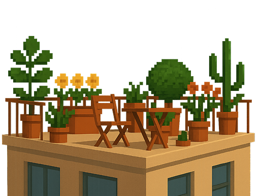
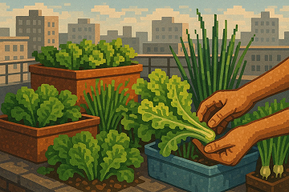
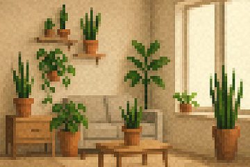

Grow Green in the Concrete Jungle
Shop now! Categories
Recommended for you
Latest blog about urban gardening and more!
here we have tips, guides and blogs from professionals and experienced gardeners!
Balcony Gardening:
Turning Small Spaces into Green Havens

Grow Your Own Veggies:
A Green Solution for City Life

Mini Indoor Gardens:
Bringing Nature into Your Apartment
Discover all now!

What customers say about us
"The shop has such a thoughtful, stylish vibe. Even the packaging is eco-friendly and aesthetic. Definitely coming back!"
“I love how CitySprout curates plants that actually thrive in small spaces. Everything I bought is still alive and growing—finally!”
"I had zero gardening experience, but the staff helped me pick the right tools and plants. Now my windowsill is my pride!"
"Living in a small apartment, I thought gardening was impossible. But with their starter kit and guidance, I now have fresh herbs growing right in my kitchen!"
"I never imagined I could grow anything in the city, but their easy-to-follow kits made it simple. Now my balcony feels like a little green escape."